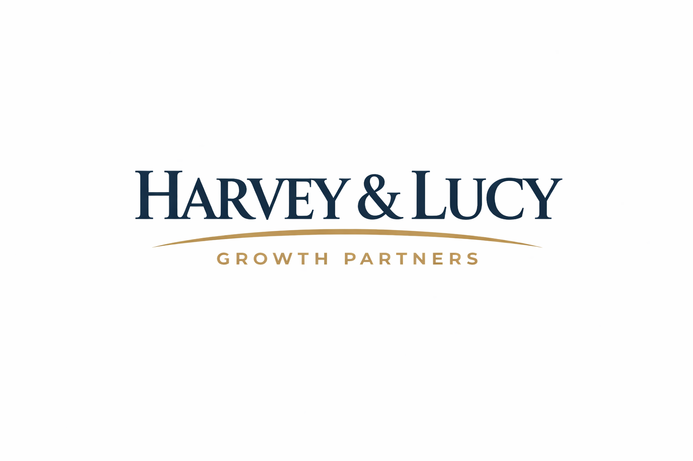
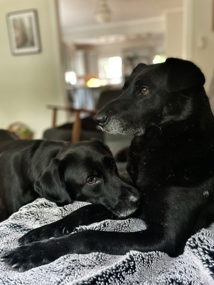

At Harvey & Lucy Growth Partners, we combine disciplined strategy, unwavering loyalty, and relentless pursuit to help organizations achieve meaningful, sustainable growth.

Markets are noisy. Opportunities move fast. Distractions are everywhere.
Our approach is grounded in focus, pattern recognition, and disciplined follow-through. Once we identify a strategic objective, we pursue it with clarity and commitment — and we don't drop it halfway through the yard.
Define your positioning and craft a story that resonates with the right audience.
Performance campaigns across search and social — optimised for revenue, not vanity metrics.
Long-term organic growth through content that earns trust and ranks.
"What impressed us most about Harvey & Lucy Growth Partners was how complementary their leadership styles are.
Lucy quickly distilled our strategy into a focused, executable plan. Her attention to detail and ability to cut through distraction kept our leadership team aligned and accountable.
Harvey brings tremendous heart and loyalty to every engagement. Once he's invested in your mission, he's fully committed — advocating for your goals as if they were his own. That combination of sharp focus and genuine dedication made a measurable difference for our organization."
"Lucy has an exceptional ability to lock in on what matters. During our engagement, she identified inefficiencies we had overlooked for years and implemented systems that immediately improved performance.
Harvey's strength lies in relationship-building. He ensures every stakeholder feels heard and valued, and his loyalty to the client never wavers. His enthusiasm brings energy to the room — and once aligned, he stays committed to the outcome.
Together, they create balance: precision and persistence, structure and spirit."
"We were navigating rapid growth and needed both clarity and cohesion. Lucy provided the clarity. She brought disciplined thinking, clear frameworks, and an unwavering focus on execution.
Harvey reinforced cohesion. His loyalty to our leadership team built trust quickly, and his advocacy ensured momentum didn't stall. He approaches every engagement with sincerity and a deep commitment to long-term partnership.
The result was not just improved metrics, but a stronger, more unified organization."